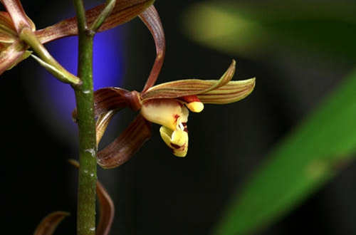
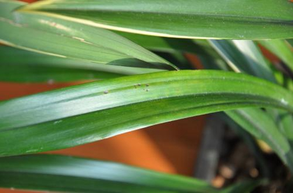
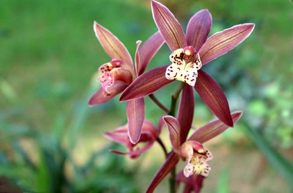

墨兰叶子上出现了这种“小黑点”，花友一开始可能没有当一回事，以为不过是小毛病，结果随着时间的推移，墨兰的状态越来越糟糕！这是怎么一回事？实际上，墨兰叶子上出现的“小黑点”，是植物“炭疽病”的表现，一旦叶子上开始出现了小黑点，随着这些黑点的逐渐增多和扩大，严重的还会导致植物死亡。如果您在花草的叶片上发现了黑点，不仅仅是您肉眼可见的出现了病症，其根系也不太乐观。
一般而言，炭疽病在高温多雨的季节当中最常出现，发病前期，植物的叶片上会出现褐色或者是黑色的斑点，如果不及时的进行治疗，病症就会逐渐恶化，致使整片叶子变成灰白色，并且伴随有黑色的小点。除了天气的原因，还有许多种情况也会导致植物出现炭疽病。例如以下这几种情况：
墨兰不像是其他的花卉，如果是在通风不良的环境当中养护，就会导致墨兰的叶片上出现黑点，尤其是在空气情况比较闷热的夏季，不通风的环境更容易导致空气当中的病菌危害到墨兰，如果长时间处于不通风的环境之中，墨兰的叶子和根系就会受到病菌的侵害。
多长时间没换土了？用这小东西，土壤松软像“蛋糕”。墨兰喜欢疏松的土壤，如果土壤长时间没有松土，或是墨兰长时间没有换盆，导致墨兰在板结的土壤当中生长，就会导致植物根部腐烂，叶子上出现黑点。对于这一种情况，建议是选择疏松肥沃的沙质土壤，或是在土壤当中添加一些腐熟的树皮，能够使得土壤更加疏松透气。
俗话说养花三年水，这浇水可有大学问，如果平时的养护之中，浇水出现了差错，浇水太多导致了烂根的情况，下面的根系生活的不好，上面的叶子就受到影响，开始长出“小黑点”，告诫主人你大该要控制水量啦！
花草养得好不好，花草本身习性占据三分，主人的养功占据七分，如果养护工作不到位，花草就容易出毛病。有的花友施肥的时候不注意，一些肥水粘在了叶片上，没有及时的清洗掉，时间一长，黏有肥料的叶片就会发焦，逐渐生长出黑斑。如果肥力比较强，出现黑斑的情况就会更严重！故而花友在施肥的时候，最好是贴着土壤表面施肥，施肥后检查植物的叶子是否有沾染肥料，如果有，及时清洗掉即可。
如果您家的墨兰已经出现了炭疽病的症状，记得要及时的剪去病叶，加强通风，降低空气环境的湿度，仅满足墨兰基本所需湿度即可。墨兰发病之后，记得及时的喷洒杀菌药剂，大概半个月喷洒一次，连续三个疗程即可。记得在接下来的养护之中，注意加强日常的管理，避免爱草重蹈覆辙哦。